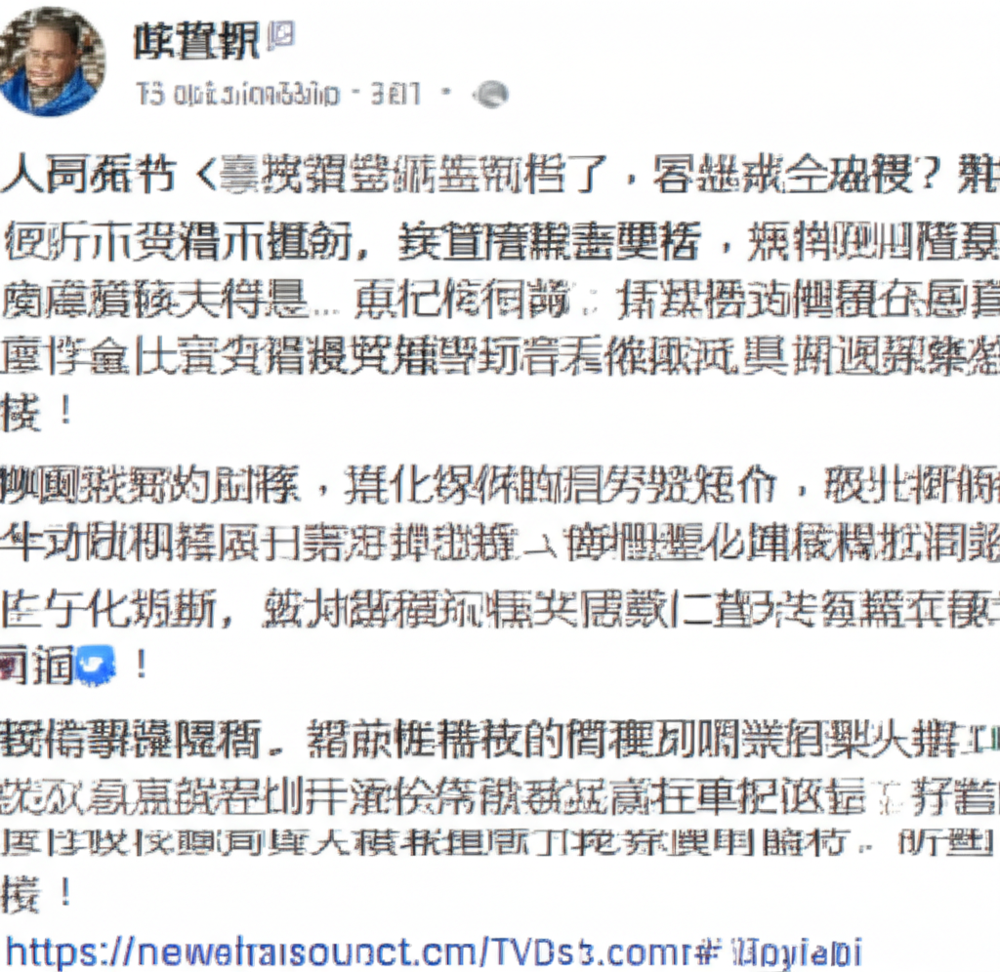

# 近期新聞摘要與分析：聚焦健康、生活與社會動態
## 引言
近期新聞呈現多元面向，涵蓋健康、生活、社會事件等多個領域。從超慢跑的健康益處到銀行分行暫停營業，再到娛樂圈的花邊新聞，這些資訊反映了當前社會關注的熱點。本篇文章將針對這些新聞進行摘要與分析，希望能幫助讀者快速掌握重點。
## 主體內容
### 第一點：健康趨勢與運動方式
多則新聞都提到了「超慢跑」這項運動，顯見其在健康領域的關注度日益提升。TVBS新聞報導中年女性靠「追劇＋超慢跑」瘦身，東森新聞也在Facebook上分享了關於超慢跑逆轉肌少症和骨質疏鬆的影片。這些報導強調了超慢跑的益處，包含高效燃脂、改善健康狀況等。此外，PChome Online新聞也報導了健身相關新聞，鼓勵人們關注自身健康。從這些資訊可以看出，人們對健康生活方式的追求日益增長，而超慢跑作為一種簡單易行的運動方式，受到了廣泛歡迎。
### 第二點：生活與財經相關資訊
TVBS新聞網報導了台灣有銀行「暫停業10間分行」的消息，顯示了經濟環境的變動和金融業的調整。此外，松果購物和momo購物網等電商平台，則反映了消費者的購物需求和市場趨勢。這些資訊對於了解當前經濟形勢和消費趨勢具有一定的參考價值。
### 第三點：社會事件與娛樂新聞
韓國偶像柾國退伍後被中國女粉絲騷擾的事件，反映了追星行為中可能存在的失控現象，以及粉絲文化中需要注意的問題。Newtalk新聞網作為網路原生媒體，持續提供多元新聞內容，旨在讓讀者掌握第一手資訊。
## 結論
總體而言，近期新聞呈現了豐富的社會圖景。健康議題、經濟動態和娛樂事件交織在一起，反映了人們對生活品質、社會發展和娛樂八卦的關注。透過對這些新聞的解讀和分析，我們可以更深入地了解當前社會的脈動，以及人們的價值觀和生活方式。